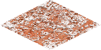

Tundra
The "tundra" on Mars refers only to the areas where the subsoil is
permafrost, or permanently frozen. This, added to the already
inhospitable environment of Red planet, makes these terrain nearly
useless for human colonization. Tundra terrain can be found near polar
regions of the planet.
This type of terrain has no silica or iron deposits, it will produce
very little food, some stone can be mined from it though. In battle, it
will not provide any advantages to defender.
Improvements:

| Movement cost |
1 |
| Defence percentage |
0 |
| Resource |
Production |
| Food |
1 |
| Stone |
2 |